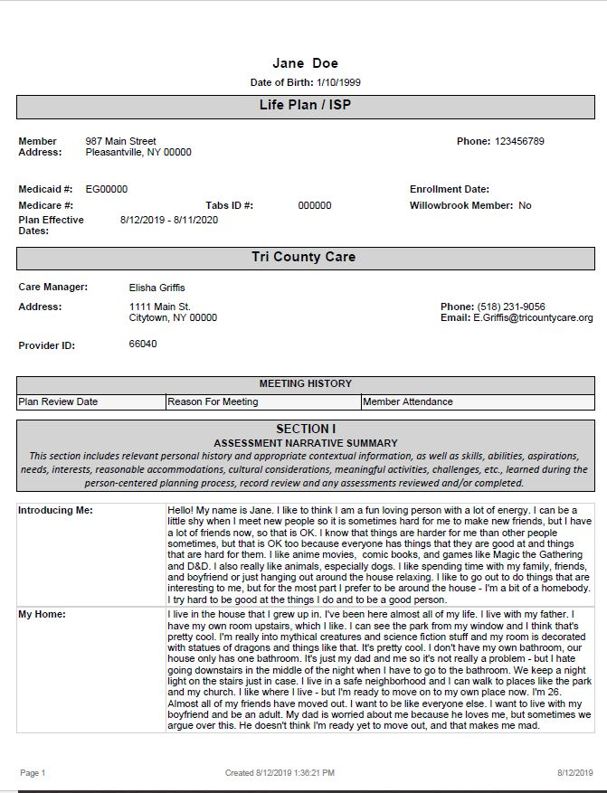
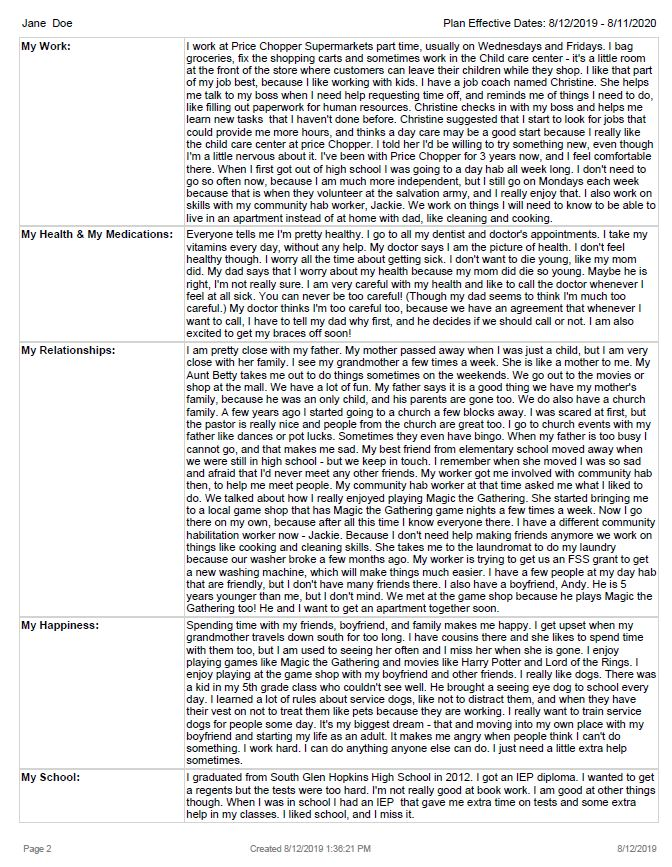
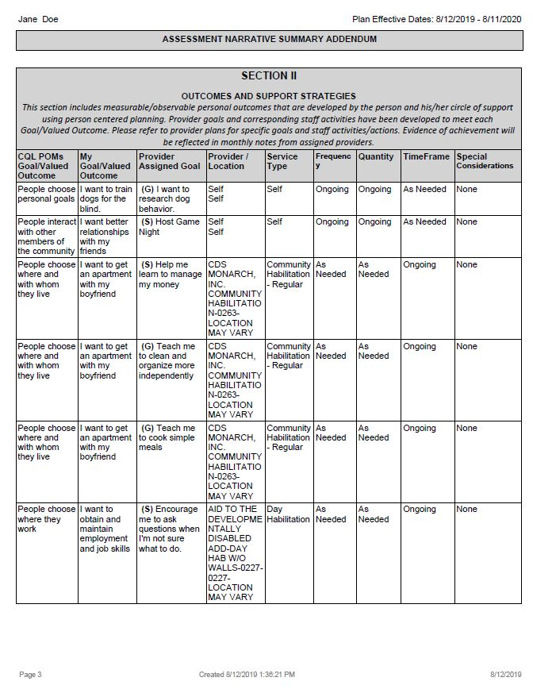
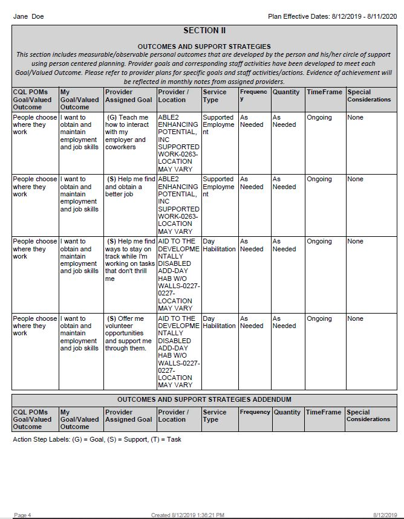
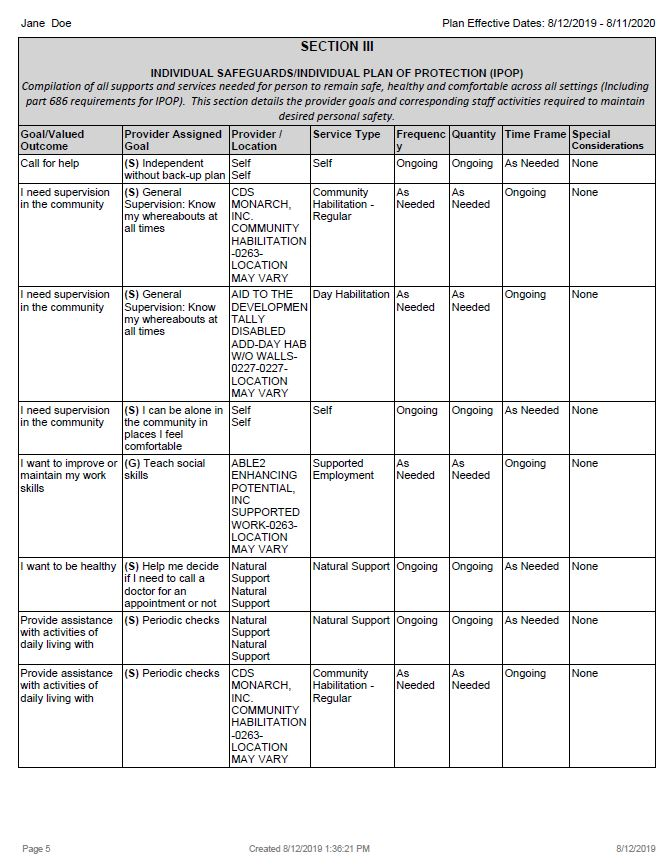
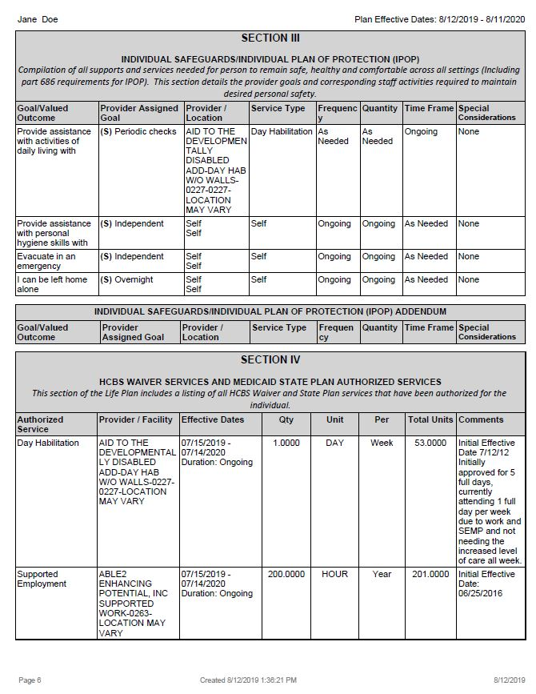
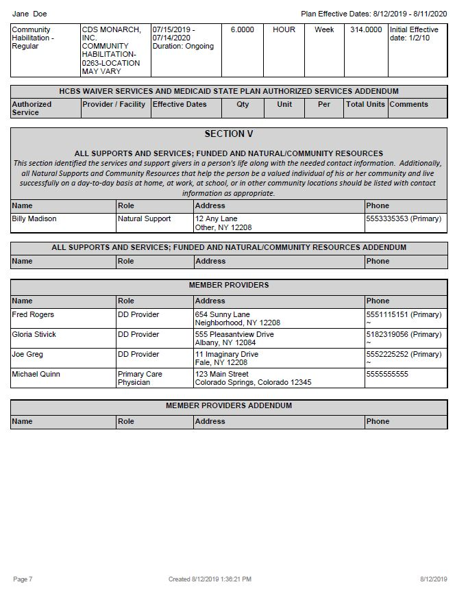
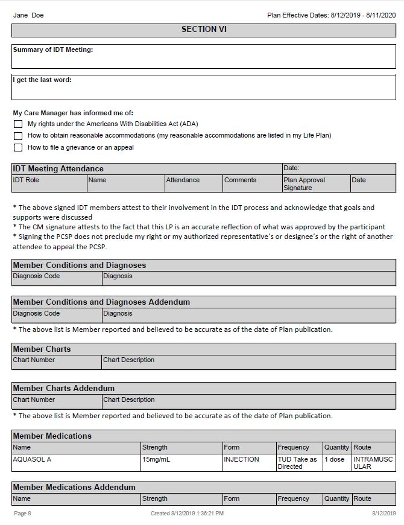
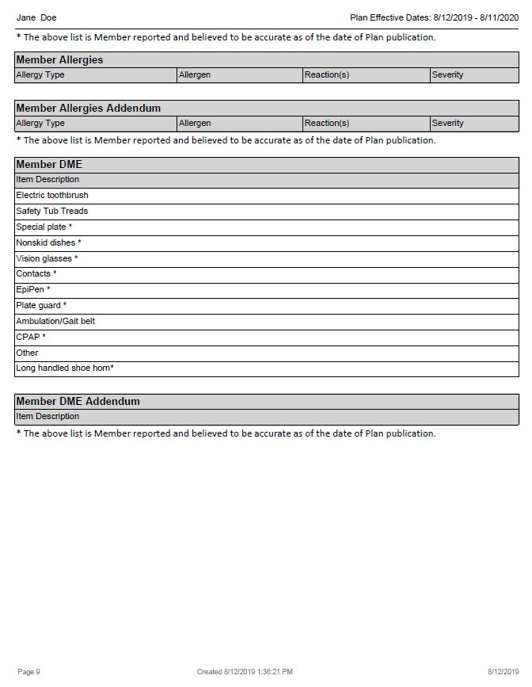

Comprehensive Care Management Scenario 4
Please look at the attached Life Plan for Jane Doe. Jane had an IAM assessment on July of 2015 to assist her
care manager to create goals/valued outcomes. Does Jane's Life Plan meet the 8 required details associated with Comprehensive Care Management?
- Includes a comprehensive health assessment.
- Includes Medical and behavioral health, rehabilitative, long term care services, and social services in plan of care.
- Individuals (and guardians) plan a central and active role in development and exucation of their plan
- Plan identifies primary and specialit doctors, behavioral health providers, and community supports.
- Plan identifies family members and natural supports involved in the individual's care
- Plan clearly identifies goals and time frames for improvement in identified areas, and interventions (staff assigned goals) that
will help meet those goals.
- Plan includes outreach and engagement activities that will support gangaging the individual and promoting continuinty of care.
- Plan includes periodic reassessment of the individual's needs and progress toward identified goals.
.








